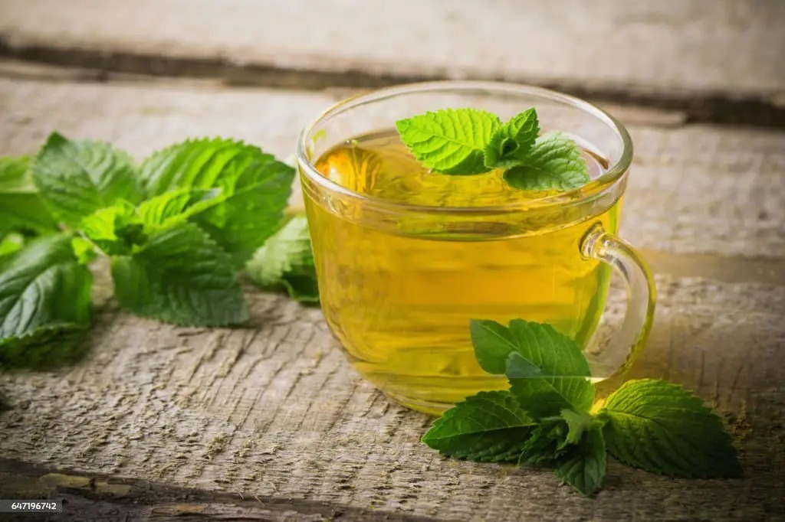

Basil Leaves: A Fresh Herb
Basil leaves are aromatic, green leaves widely used in cooking for their distinct flavor and aroma. They are also known for their health benefits.
Key Benefits of Basil Leaves:
- Rich in antioxidants, which help protect the body from free radicals.
- Supports digestive health and helps alleviate bloating and indigestion.
- Has anti-inflammatory properties that reduce swelling and pain.
- Boosts immunity and has antibacterial and antiviral effects.
- Promotes healthy skin and reduces acne when applied topically.
Ingredients
- 1 cup fresh basil leaves (washed)
- 1 cup hot water
- 1 teaspoon honey (optional, for sweetness)
- 1 teaspoon lemon juice (optional, for flavor)
- Fresh mint leaves (optional, for garnish)
Instructions
- Place the fresh basil leaves in a mug or teapot.
- Boil 1 cup of water in a kettle or saucepan.
- Once the water boils, pour it over the basil leaves in the mug.
- Let the tea steep for about 5-10 minutes, depending on how strong you want the flavor.
- Strain the tea to remove the basil leaves.
- Optional: Add honey for sweetness and lemon juice for extra flavor.
- Optional: Garnish with fresh mint leaves for a refreshing touch.
- Stir well and enjoy your refreshing basil tea!